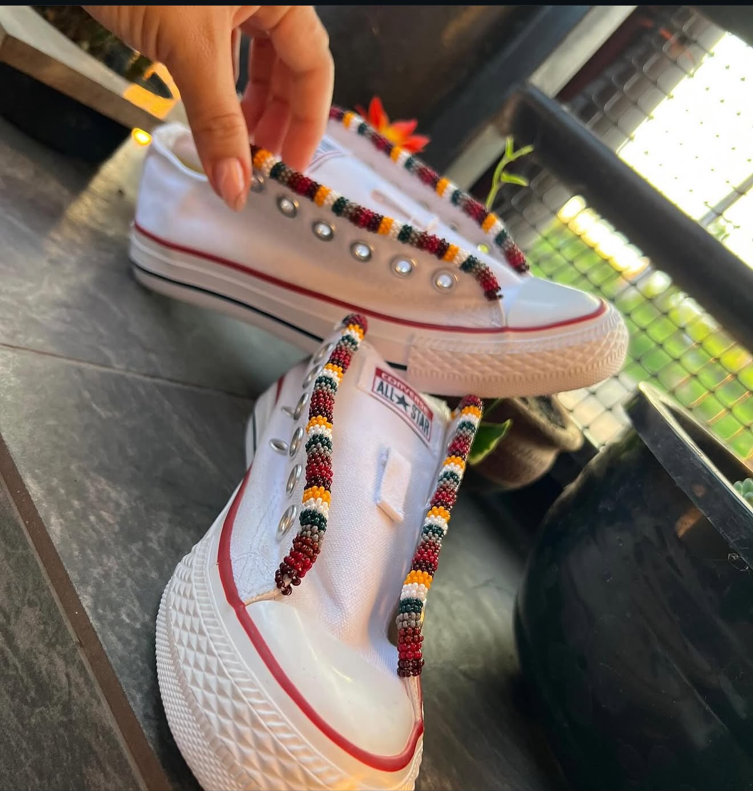
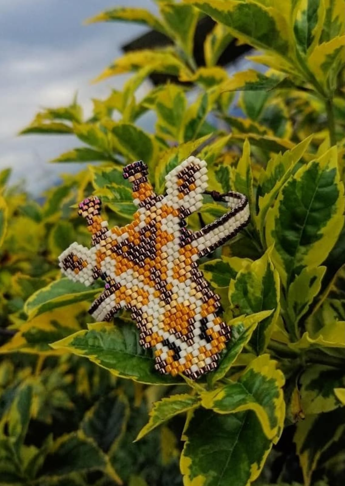

Mostacilla Checa. El tejido ancestral es el diálogo silencioso entre las manos humanas y la memoria de la tierra. Cada pequeña cuenta de vidrio es un fragmento de luz, una gota de tiempo petrificada que el artesano elige con paciencia infinita. Al unirlas, no solo se construye un adorno, se está escribiendo un poema visual que no necesita traducción.

Tejer Miyuki es un acto de meditación y reverencia donde el hilo representa la línea de la vida, ese cordón invisible que nos conecta con los ancestros. Es un acto de oración, paciencia y memoria cósmica.